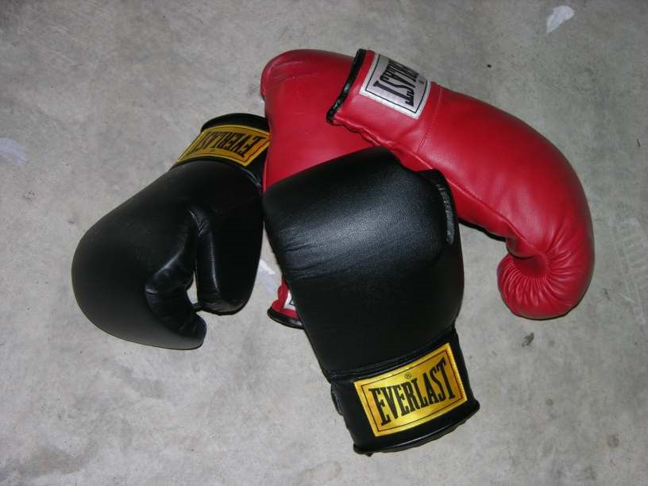

세계 1위가 마침내 받은 금… 송세라, 아시안게임 여자 에페 개인전 우승
송세라가 22일 아이치 스카이 엑스포에서 열린 여자 에페 개인전 결승에서 싱가포르의 티카나 키리아를 15-8로 꺾고 금메달을 땄다. 국제 종합대회 개인전 금메달은 이번이 처음이다.
손기요 기자 · 2026.09.23
橋경제·문화·스포츠

송세라가 22일 일본 아이치현 도코나메의 아이치 스카이 엑스포에서 열린 2026 아이치·나고야 아시안게임 펜싱 여자 에페 개인전 결승에서 싱가포르의 티카나 키리아를 15-8로 제압하고 금메달을 차지했다.
광고 문의 · 300×250송세라가 국제 종합대회 개인전에서 금메달을 딴 것은 이번이 처음이다. 세계선수권에서 정상에 오르고 세계 랭킹 최상단을 지켜 왔지만, 아시안게임과 올림픽 무대에서는 유독 개인전 금과 인연이 닿지 않았다.
결승에 이르는 길은 순탄하지 않았다. 앞선 라운드에서 14-14 동점 상황을 두 차례 넘긴 끝에 승부를 가져왔다. 그는 경기 뒤 마지막 찌르기에 대해 뒤가 없다는 생각으로 자신 있게 들어갔다는 취지로 말했다.
기록과 무관 사이의 간격
세계선수권 성적과 종합대회 성적이 엇갈리는 일은 펜싱에서 드물지 않다. 단판 토너먼트의 변수, 경기 방식의 미세한 차이, 그리고 대회마다 달라지는 심판 판정의 경향이 겹친다. 오래 정상을 지킨 선수일수록 상대의 분석 대상이 된다는 점도 작용한다.
그래서 이번 금메달은 기록의 공백을 메운 성격이 짙다. 한국 펜싱은 남녀 사브르에서 전통적으로 강세를 보여 왔고, 에페 종목의 개인전 성과는 상대적으로 드물었다.
아이치·나고야에서의 한국
이번 대회에서 한국은 종목별로 명암이 갈리고 있다. 남자농구가 12년 만에 금메달을 따냈고 근대5종에서도 금이 나왔지만, 구기 종목 일부에서는 부진이 이어졌다. 대회 후반부 일정에 따라 종합 성적의 윤곽이 드러날 전망이다.
출처·참고 (사실 확인용 — 본문은 직접 재작성)
· 대회 조직위 경기 결과
· 경향신문·한국일보·파이낸셜뉴스 보도 종합
· 대회 조직위 경기 결과
· 경향신문·한국일보·파이낸셜뉴스 보도 종합